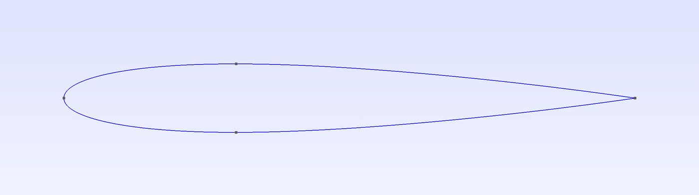
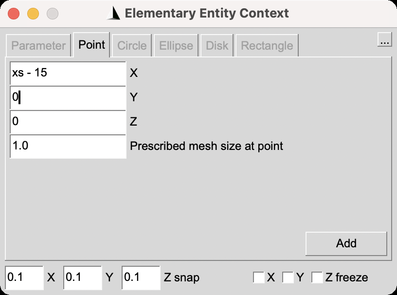
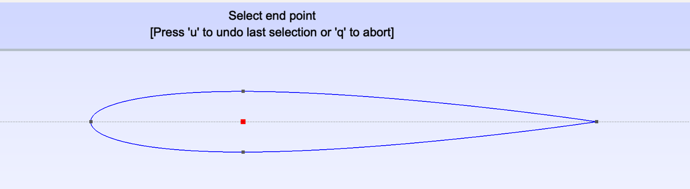
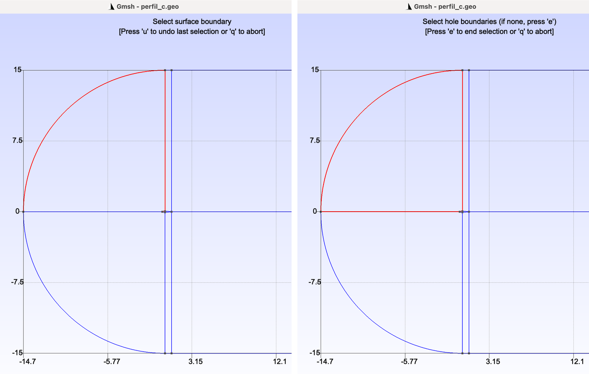
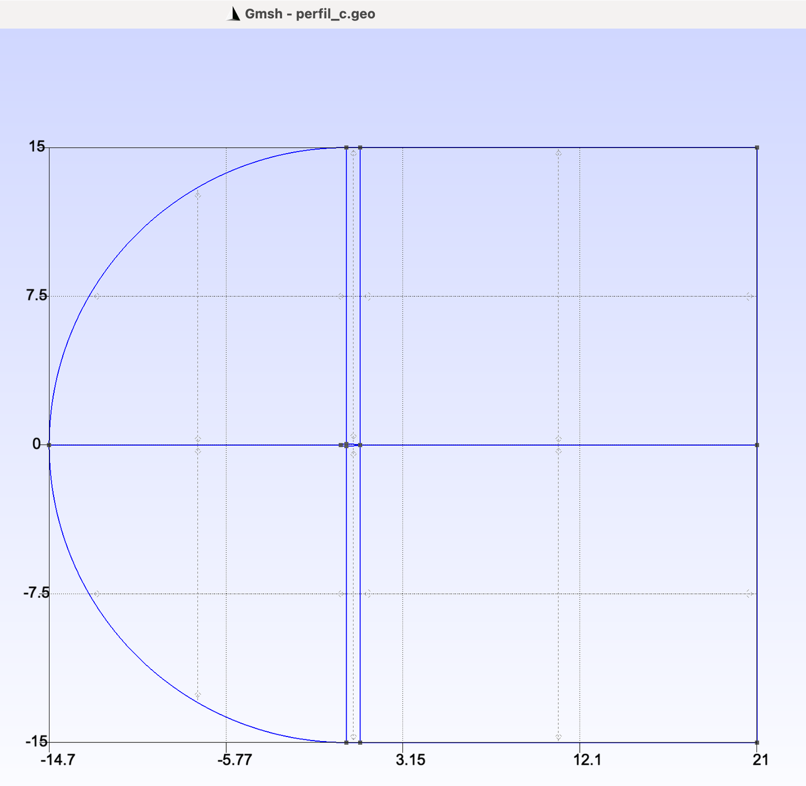
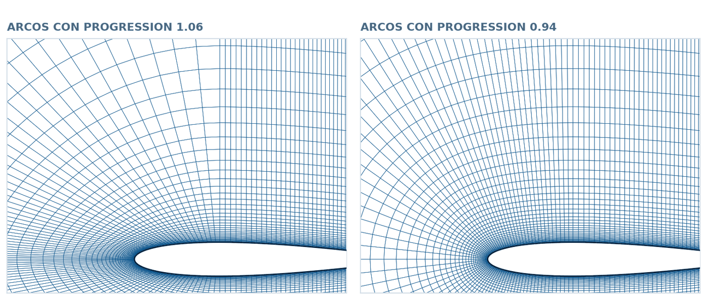
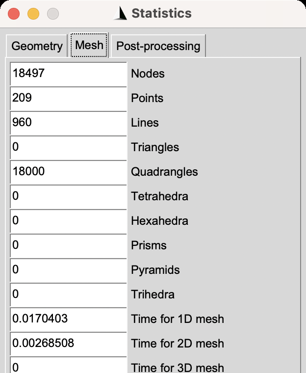
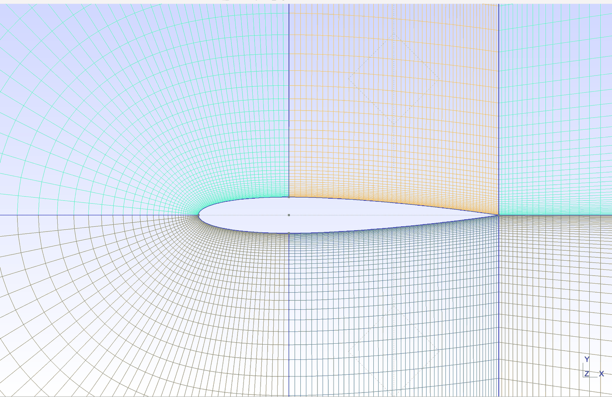
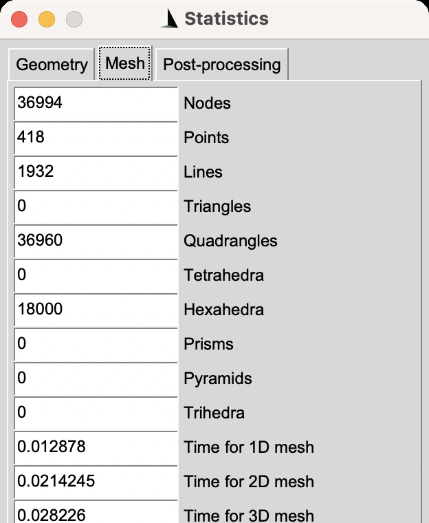

The Airfoil in a C-Domain: a Block-Structured Mesh
Six four-sided blocks wrap a NACA 0012 airfoil and its wake. The same mesh is built with the interface and in the .geo file, and a potential-flow run shows why a mesh that checkMesh accepts can still give the wrong pressure.
Gmsh · Tutorial 2.2.1
El perfil alar en un dominio en C: la malla por bloques
Seis bloques de cuatro lados envuelven un perfil NACA 0012 y su estela. La misma malla se construye con la interfaz y en el archivo .geo, y un cálculo de flujo potencial muestra por qué una malla que checkMesh acepta puede dar una presión equivocada.
Gmsh · Tutorial 2.2.1
Das Tragflächenprofil im C-Gebiet: ein blockstrukturiertes Netz
Sechs vierseitige Blöcke umschließen ein NACA-0012-Profil und seinen Nachlauf. Dasselbe Netz entsteht über die Oberfläche und in der .geo-Datei, und eine Potentialströmung zeigt, warum ein von checkMesh akzeptiertes Netz trotzdem einen falschen Druck liefern kann.
Estimated reading: 55 minLectura estimada: 55 minLesedauer: ca. 55 minLevel: undergraduateNivel: licenciaturaNiveau: BachelorVerified on Gmsh 4.15.2 and OpenFOAM 13Verificado en Gmsh 4.15.2 y OpenFOAM 13Geprüft mit Gmsh 4.15.2 und OpenFOAM 13
Full English translation in preparation. Each section below carries a summary of its content; the complete text, figures and tables are available in the Spanish version, which the ES button above selects.
Build a structured C-grid around a NACA 0012 airfoil with six four-sided blocks, both with the Gmsh interface and in the .geo file; grade the nodes with Progression; extrude the mesh one cell thick with named boundaries; and check it in OpenFOAM 13 with checkMesh and a potential-flow pressure distribution compared with a panel method. Tutorial 1.1 is the only prerequisite.
The idea
A C-shaped domain around the airfoil and its wake
A C-grid wraps the leading edge with an arc and continues downstream along the wake, so grid lines follow the flow and the trailing edge is a single point. Here the domain is split into six blocks: in front of and behind the section of maximum thickness, and along the wake, above and below the airfoil. Every block has four sides, which Transfinite needs.
Step 1
The NACA 0012 contour
The contour file generates 101 points per surface with cosine spacing and the closed-trailing-edge thickness law (last coefficient 0.1036), joins them with four Spline curves split at x/c = 0.3014, and hides every point except the leading edge, the trailing edge and the two split points, so that only those can be picked in the interface.
Step 2
Points, arcs and lines of the domain
Nine points, two arcs and twelve lines complete the domain: arc radius and half-height 15 chords, wake length 20 chords. The point dialog accepts expressions such as xs - 15. Picking points 0.06 chords apart requires zooming with the mouse wheel; the 1:1 button of the status bar restores the full view without losing the selection. Created in the order of the guide, curves 5 to 18 get the same numbers as in the handwritten file.
Step 3
The six blocks
With shared curves, one click no longer selects a whole loop: the four curves of each block must be clicked one after another around the block. Clicking 1, 8, 5 and 7 writes Curve Loop(1) = {1, 8, -5, -7}, exactly as in the file. Each loop starts at the airfoil or at the wake cut, which fixes the order of the faces after extrusion.
Step 4
Node distribution and the structured mesh
Opposite sides of every block carry the same number of nodes; Progression r makes each segment r times the previous one along the curve, so the curve direction decides where the mesh is fine. The first segment is h1 = L(r - 1)/(r^(N-1) - 1), which the mesh reproduces exactly. The result is 18 000 quadrilaterals, the same through the interface and the file.
Step 5
Extrusion and physical groups, in the file
The interface's Extrude writes a single command without a result list, and in the top view a click on a surface selects its extruded copy in front of it (surface 40 instead of 1). The extrusion and the physical groups are therefore written in the file: one Extrude per block, with the faces taken from its list in Curve Loop order. Mesh Save then writes MSH 2.2.
Step 6
OpenFOAM, checkMesh and the pressure on the airfoil
checkMesh reports 36 600 points, 18 000 hexahedra, maximum non-orthogonality 12.8° and Mesh OK. A patch named wall clashes with OpenFOAM's automatic wall group, so the airfoil patch is called airfoil. With potentialFoam at zero incidence, the pressure coefficient from the wall velocity has a minimum of -0.4131 against -0.4135 from a Hess-Smith panel method. With the arc nodes graded towards the front instead, checkMesh still says Mesh OK, but the minimum is -2.23.
Files
The five .geo files and what each number controls
The five files chain with Include: contour, domain, blocks, mesh and OpenFOAM. The cell count is 2(Nd + Nt + Ne)Nr in divisions, and the node count of the 2D mesh is (2M + 1)(Nr + 1) - (Ne + 1) with M = Nd + Nt + Ne.
Suggested practice
A finer mesh and a shorter domain
Refine the mesh by doubling the divisions while keeping the first cell size, and shorten the domain to 5 chords; predict the counts with the formulas and compare the pressure minimum with the panel method.
Key points
What to keep from this guide
Four sides per block; equal nodes on opposite sides; curve direction decides the grading; loops clicked curve by curve; extrusion and groups in the file; and a mesh is validated by a result, not only by checkMesh.
Common mistakes
Mistakes that a C-grid does not forgive
Clicking the curves of a loop out of order, a progression that runs the wrong way, grading the arc towards the front, naming the airfoil patch wall, selecting overlapped front and back faces by clicking, and computing the pressure coefficient from potentialFoam's p.
Sources
References
Gmsh reference manual; NACA Report 824 (Abbott, von Doenhoff and Stivers); Hess and Smith (1967); the potentialFoam and airFoil2D cases of OpenFOAM 13.
Objetivos de aprendizaje
Qué se debe poder hacer al terminar
Este tutorial construye la malla con la que se estudia un perfil alar en OpenFOAM: una malla estructurada en forma de C alrededor de un NACA 0012 y de su estela. Parte del Tutorial 1.1 y supone lo que ahí se aprendió: crear puntos, líneas y superficies con la interfaz, usar Transfinite y Recombine, extruir una capa y nombrar las fronteras. Al terminar esta guía debe ser posible:
Explicar por qué un perfil se malla en un dominio en C y dividir ese dominio en bloques de cuatro lados.
Generar el contorno de un perfil NACA con un bucle del lenguaje .geo y curvas Spline.
Construir los seis bloques con la interfaz y en el archivo, con la misma numeración por los dos caminos.
Repartir los nodos con Progression, sabiendo qué hace el sentido de cada curva y por qué los lados opuestos deben llevar los mismos nodos.
Escribir en el archivo la extrusión y los grupos físicos, y guardar una malla que gmshToFoam acepte.
Comprobar la malla con checkMesh y, sobre todo, con un resultado conocido: la presión sobre el perfil a cero grados.
Qué hace falta. Gmsh 4.15.2 (gmsh.info) para los pasos 1 a 5 y OpenFOAM 13 (openfoam.org) para el paso 6. Es conveniente haber seguido antes el Tutorial 1.1. Los cinco archivos .geo se reproducen completos en el texto.
El recorrido, en vídeo. Todo lo que se hace con la interfaz está grabado, sin narración, en dos vídeos: la parte 1 (3:46) escribe el archivo del contorno del paso 1, y la parte 2 (17:11) sigue con los pasos 2 a 5, hasta guardar la malla para OpenFOAM. Los vídeos muestran los gestos y esta guía, la explicación; los dos botones de arriba llevan a ellos.
La idea
Un dominio en C alrededor del perfil y de su estela
Un perfil alar perturba el flujo hasta distancias de muchas cuerdas, deja detrás una estela y concentra los cambios más bruscos de velocidad y de presión cerca del borde de ataque y a lo largo de la pared. La malla tiene que cumplir tres cosas a la vez: llegar lejos, ser fina junto al perfil y seguir la estela.
Por qué en C
Hay tres formas clásicas de envolver un perfil con una malla estructurada. En una malla en O, las líneas de la malla dan la vuelta completa al perfil, y el borde de salida afilado queda en medio de una de ellas. En una malla en H, las líneas son casi rectas y paralelas a la cuerda, y la malla se afina mal alrededor del borde de ataque. En una malla en C, las líneas envuelven el borde de ataque, recorren el perfil y siguen de largo hacia atrás, a lo largo de la estela: el borde de salida es simplemente el punto donde la C se dobla, y las celdas de la estela quedan alineadas con el flujo que sale del perfil. Por eso es la topología más usada para perfiles con borde de salida afilado.
Seis bloques de cuatro lados
Transfinite Surface sólo sabe llenar superficies de tres o cuatro esquinas. El dominio en C se divide entonces en bloques de cuatro lados: tres arriba del perfil y tres abajo, separados por el perfil mismo y por el corte de estela, una línea que sale del borde de salida hacia atrás. Cada mitad se parte a su vez en dos puntos: en la sección de espesor máximo, \(x/c \approx 0.30\), y en el borde de salida.
Figura 1.Los seis bloques del dominio en C. A la izquierda, el dominio completo a escala: los arcos de la entrada tienen radio \(R = 15\) cuerdas con centro en la partición del perfil, y la estela mide \(L = 20\) cuerdas desde el borde de salida. A la derecha, el recuadro naranja ampliado: el perfil con sus cuatro curvas, los puntos 100 (borde de ataque), 137 y 237 (particiones), 200 (borde de salida) y 301 (centro de los arcos, dentro del perfil), y el arranque de las líneas que llegan a la frontera exterior. Las flechas muestran el sentido de cada curva, que decide hacia dónde se afina la malla en el paso 4. Los números son los del archivo y los que escribe la interfaz si se sigue el orden de la guía.
Bloques 1 y 4, delante. Van del borde de ataque a la partición. Su frontera exterior es un arco de radio \(R = 15\) cuerdas con centro en la partición: con ese centro, el arco llega en ángulo recto a la línea que sale del borde de ataque y a la radial de la partición.
Bloques 2 y 5, detrás. Van de la partición al borde de salida y son una franja delgada de 0.7 cuerdas que llega hasta la frontera superior o inferior.
Bloques 3 y 6, la estela. Van del borde de salida a la salida, \(L = 20\) cuerdas más atrás.
Los seis bloques forman, en rigor, una sola malla estructurada: la primera fila de celdas parte de la salida por abajo, sigue el corte de estela y el intradós hasta el borde de ataque, regresa por el extradós y termina en la salida por arriba. Partirla en bloques permite controlar cada tramo por separado.
La prueba que valida la malla
Una malla se comprueba con un resultado que se conozca de antemano. Aquí se usa el flujo potencial a cero grados: con un perfil simétrico y sin ángulo de ataque no hace falta la condición de Kutta, el campo es simétrico, y la distribución de presión sobre el perfil se calcula con mucha precisión con un método de paneles. Si la malla está bien construida, OpenFOAM debe reproducir esa presión; el paso 6 muestra que checkMesh no basta para asegurarlo.
Unidades. La cuerda vale 1, así que todas las longitudes del archivo están en cuerdas. Como en el Tutorial 1.1, gmshToFoam copia los números tal cual: para un perfil de otra cuerda basta escalar la malla en OpenFOAM.
Paso 1
El contorno del NACA 0012
El perfil es la única geometría que no se puede dibujar con unos cuantos clics: su contorno es una curva definida por una fórmula. Se entrega como un archivo corto que genera los puntos con un bucle y los une con curvas Spline; los pasos siguientes, por la interfaz o en el archivo, parten de él.
La fórmula del espesor
Un NACA de cuatro dígitos con los dos primeros en cero es simétrico. Los dos últimos dan el espesor máximo en porcentaje de la cuerda, \(t = 0.12\), y el semiespesor a una distancia \(x\) del borde de ataque, en cuerdas, es
La definición original lleva \(0.1015\) en el último término, y con ella el perfil termina con un espesor de 0.00252 cuerdas en el borde de salida. Con \(0.1036\) la suma de los coeficientes vale cero y el borde de salida se cierra en un punto, que es lo que necesita una malla en C: el corte de estela sale de ese punto.
El archivo del contorno
perfil_1_contorno.geo
// Perfil NACA 0012 · paso 1: el contorno
// Cuerda unitaria. Borde de salida cerrado: último coeficiente 0.1036 (no 0.1015).
c = 1.0; // cuerda
t = 0.12; // espesor máximo relativo: 12 %
n = 100; // intervalos por cara del perfil
k = 37; // índice del punto donde se parte cada cara
// Extradós: puntos 100 (borde de ataque) a 100 + n (borde de salida).
// Intradós: puntos 200 + i, i = 1 ... n - 1 (los dos bordes son comunes).
For i In {0:n}
x = 0.5 * (1 - Cos(Pi * i / n)); // espaciado coseno
y = 5 * t * (0.2969 * Sqrt(x) - 0.1260 * x - 0.3516 * x^2 + 0.2843 * x^3 - 0.1036 * x^4);
Point(100 + i) = {c * x, c * y, 0};
If (i > 0 && i < n)
Point(200 + i) = {c * x, -c * y, 0};
EndIf
EndFor
xs = c * 0.5 * (1 - Cos(Pi * k / n)); // abscisa de la partición: 0.3014 c
Spline(1) = {100 : 100 + k}; // extradós, delante
Spline(2) = {100 + k : 100 + n}; // extradós, detrás
Spline(3) = {100, 201 : 200 + k}; // intradós, delante
Spline(4) = {200 + k : 200 + n - 1, 100 + n}; // intradós, detrás
// Sólo quedan visibles, y seleccionables en la interfaz, los cuatro puntos que usa
// el dominio: 100 (borde de ataque), 100 + n (borde de salida), 100 + k y 200 + k.
Hide { Point{101 : 100 + k - 1, 100 + k + 1 : 100 + n - 1,
201 : 200 + k - 1, 200 + k + 1 : 200 + n - 1}; }
El bucle For recorre \(i = 0, \dots, n\). Cada vuelta calcula \(x_i = \tfrac12\,[1 - \cos(\pi i/n)]\), que junta los puntos cerca de los dos bordes, donde la curvatura es mayor, y crea un punto del extradós, \((x, y_t)\), y uno del intradós, \((x, -y_t)\).
La numeración es deliberada: el extradós ocupa del 100 (borde de ataque) al 200 (borde de salida), y el intradós, del 201 al 299. Los dos bordes son los mismos puntos para las dos caras, gracias al If.
xs es la abscisa del punto 137, donde se parte cada cara: \(x_s = 0.3014\). Se usa en el paso 2.
Las curvas Spline pasan por listas de puntos escritas como intervalos: {100 : 100 + k} es la lista 100, 101, …, 137. Las cuatro curvas van del borde de ataque hacia atrás, y ese sentido importa en el paso 4.
Hide oculta los 196 puntos intermedios. En la interfaz sólo quedan visibles los cuatro que usa el dominio (100, 137, 237 y 200): el punto 101 está a 0.0028 cuerdas del borde de ataque, y sin ocultarlos sería imposible hacer clic en el correcto.
Los puntos del contorno no son los nodos de la malla. Sólo definen la forma de las curvas. Dónde van los nodos lo deciden, en el paso 4, las órdenes Transfinite Curve, sin relación con estos 200 puntos.
Con la interfaz
Hay dos caminos para llegar al mismo archivo. El corto: guardar el texto anterior como perfil_c.geo con cualquier editor y abrirlo con File ▸ Open.... El segundo no sale de Gmsh y es el del vídeo:
File ▸ New..., escribir perfil_c.geo y confirmar. Gmsh pregunta entonces «Which geometry kernel do you want to use?»: hacer clic en Built-in, el núcleo del lenguaje .geo clásico, que es el que usa toda esta guía. El archivo nace con una sola línea de comentario y el título de la ventana cambia a «Gmsh - perfil_c.geo».
Geometry ▸ Edit script abre ese archivo en el editor de texto del sistema. Pegar ahí el contenido de perfil_1_contorno.geo, guardar y cerrar el editor.
Geometry ▸ Reload script. La barra de estado dice «Done reading 'perfil_c.geo'» y aparecen el perfil y sólo cuatro puntos (figura 2).
Todo lo que se haga después con la interfaz se agregará al final de este mismo archivo.

Figura 2.El contorno, recién abierto.perfil_c.geo abierto en Gmsh 4.15.2 con las opciones de fábrica. Se ven las cuatro curvas Spline del perfil y sólo cuatro puntos: el borde de ataque, las dos particiones y el borde de salida. Los otros 196 están ocultos por la orden Hide del archivo. La captura muestra sólo la franja de la ventana gráfica que ocupa el perfil.
Pegar por tramos para ver qué hace cada parte. En el vídeo, el contorno se pega en tres tramos y se recarga tras cada uno: primero los parámetros y el bucle, y aparecen los 200 puntos; luego xs y las cuatro Spline, y los puntos quedan unidos por curvas; por último Hide, y quedan a la vista sólo los cuatro puntos que usa el dominio. El archivo final es el mismo; el recorrido enseña qué agrega cada bloque de órdenes.
Paso 2
Puntos, arcos y líneas del dominio
El dominio necesita nueve puntos más, dos arcos y doce líneas. La tabla 1 da los puntos y la tabla 2, las curvas en el orden en que conviene crearlas.
Archivo
Interfaz
X en el archivo
Y en el archivo
X e Y tecleadas
Qué es
1
300
xs - R
0
xs - 15, 0
frente de la entrada
2
301
xs
0
xs, 0
centro de los dos arcos
3
302
xs
R
xs, 15
arriba de la partición
4
303
xs
-R
xs, -15
abajo de la partición
5
304
c
R
1, 15
arriba del borde de salida
6
305
c
-R
1, -15
abajo del borde de salida
7
306
c + L
R
21, 15
salida, arriba
8
307
c + L
0
21, 0
salida, sobre el corte de estela
9
308
c + L
-R
21, -15
salida, abajo
Tabla 1.Los nueve puntos del dominio. Coordenadas tal como están escritas en perfil_2_dominio.geo y en el archivo que escribió la interfaz, donde se teclearon en los campos X y Y de Add ▸ Point. xs es la abscisa de la partición, definida en el archivo del contorno (\(x_s = 0.3014\)); en el archivo, R = 15, L = 20 y c = 1. La interfaz numera los puntos a partir del mayor que ya existe, 299.
Con la interfaz: los puntos
Geometry ▸ Elementary entities ▸ Add ▸ Point. Se abre Elementary Entity Context, como en el Tutorial 1.1.
En X escribir xs - 15 y en Y, 0; hacer clic en Add. Los campos aceptan expresiones con las variables del archivo (figura 3): la interfaz escribe Point(300) = {xs - 15, 0, 0, 1.0};, con la expresión tal cual. El número 300 es el siguiente al mayor que ya existía.
Repetir con los otros ocho puntos de la tabla 1, en ese orden, y presionar q. La vista se ajusta al dominio completo y muestra los ejes.

Figura 3.Una expresión en lugar de un número.Elementary Entity Context con xs - 15 en X, antes de hacer clic en Add. La variable xs está definida en el archivo abierto, y la interfaz copia la expresión tal cual en la orden Point que escribe.
El tamaño que propone el campo Prescribed mesh size at point, 1.0, puede quedarse: con Transfinite en todas las curvas, el tamaño de los puntos no interviene.
Acercar y alejar la vista
En la vista completa, la cuerda ocupa unas cuantas decenas de píxeles y los cuatro puntos del perfil se confunden en uno. Para hacer clic en ellos hay que acercarse:
La rueda del ratón acerca o aleja alrededor de la posición del puntero. Desde la vista completa hasta que la cuerda ocupa unos 600 puntos de pantalla hacen falta muchas vueltas de rueda: conviene dejar el puntero sobre el perfil mientras se gira.
El botón 1:1 de la barra de estado, abajo a la izquierda, devuelve la vista completa de un clic. No cancela la selección en curso: se puede hacer clic en el borde de ataque de cerca, oprimir 1:1 y hacer clic en un punto lejano para terminar la línea.
La etiqueta que aparece al detener el puntero. Si el puntero se queda quieto un instante sobre una entidad, Gmsh muestra una etiqueta amarilla con lo que hay debajo: «Point 301, Position (0.3014…, 0, 0)» para un punto, «Line 7, Boundary points: 100, 300» para una curva, y el aviso de que un doble clic abre sus parámetros. Es la manera de confirmar qué se va a seleccionar antes de hacer clic, sobre todo entre puntos que en pantalla casi se tocan. Como la etiqueta tapa lo que está debajo, conviene apartar el puntero para mirar la geometría o la malla.
Con la interfaz: los arcos y las líneas
Add ▸ Circle arc. El mensaje dice «Select start point»: hacer clic en el punto 300, el frente. Cambia a «Select center point»: acercarse y hacer clic en el punto 301, dentro del perfil (figura 4). Cambia a «Select end point»: oprimir 1:1 y hacer clic en el 302. Queda escrito Circle(5) = {300, 301, 302};.
Repetir con 300, 301 y 303 para el arco 6, y presionar q.
Add ▸ Line. Crear las líneas 7 a 18 de la tabla 2, en ese orden y haciendo clic primero en el punto de inicio: 100 y 300, 137 y 302, 237 y 303, y así sucesivamente. Presionar q al terminar.

Figura 4.El centro del arco, de cerca. Durante Add ▸ Circle arc, con la vista acercada con la rueda del ratón. Arriba, el mensaje de la ventana gráfica; abajo, la franja del perfil, de la misma captura: el punto 301, en la partición y dentro del perfil, ya está seleccionado (en rojo), y el mensaje pide el punto final. En la vista completa ese punto no se distingue de los dos puntos de la partición, que están a 0.06 cuerdas.
Curva
En el archivo
Escrito por la interfaz
Qué es
5
Circle(5) = {1, 2, 3}
Circle(5) = {300, 301, 302}
arco superior de la entrada
6
Circle(6) = {1, 2, 4}
Circle(6) = {300, 301, 303}
arco inferior de la entrada
7
Line(7) = {BA, 1}
Line(7) = {100, 300}
del borde de ataque al frente
8
Line(8) = {PX, 3}
Line(8) = {137, 302}
radial superior en la partición
9
Line(9) = {PN, 4}
Line(9) = {237, 303}
radial inferior en la partición
10
Line(10) = {BS, 5}
Line(10) = {200, 304}
radial superior en el borde de salida
11
Line(11) = {BS, 6}
Line(11) = {200, 305}
radial inferior en el borde de salida
12
Line(12) = {3, 5}
Line(12) = {302, 304}
frontera superior sobre el perfil
13
Line(13) = {4, 6}
Line(13) = {303, 305}
frontera inferior bajo el perfil
14
Line(14) = {5, 7}
Line(14) = {304, 306}
frontera superior sobre la estela
15
Line(15) = {6, 9}
Line(15) = {305, 308}
frontera inferior bajo la estela
16
Line(16) = {BS, 8}
Line(16) = {200, 307}
corte de estela
17
Line(17) = {8, 7}
Line(17) = {307, 306}
salida, mitad superior
18
Line(18) = {8, 9}
Line(18) = {307, 308}
salida, mitad inferior
Tabla 2.Las catorce curvas del dominio, en el orden en que se crean. Columna del archivo: la orden de perfil_2_dominio.geo, con las variables BA y BS (bordes de ataque y de salida, puntos 100 y 200) y PX y PN (particiones del extradós y del intradós, 137 y 237). Columna de la interfaz: lo que escribió Gmsh 4.15.2 con los clics de la guía. En un arco, el punto del medio es el centro. El sentido de cada curva va del primer punto al último.
La misma numeración por los dos caminos. Las curvas del contorno son la 1 a la 4, así que el primer arco que crea la interfaz es la curva 5. Si los arcos y las líneas se crean en el orden de la tabla 2, las catorce curvas llevan los mismos números que en el archivo escrito a mano, y también los lazos y las superficies del paso 3. Sólo los puntos del dominio se numeran distinto: 300 a 308 en la interfaz y 1 a 9 en el archivo. Por eso las órdenes de malla del paso 4 y el bloque de extrusión del paso 5 sirven igual para los dos archivos.
El orden de los clics es el sentido de la curva.Line(7) = {100, 300} va del borde de ataque al frente porque se hizo clic primero en el 100. Todas las líneas que salen del perfil o del corte de estela se crean desde el perfil hacia afuera, y el paso 4 cuenta con ese sentido.
En el archivo .geo
perfil_2_dominio.geo
// Perfil NACA 0012 · paso 2: los puntos y las curvas del dominio en C
Include "perfil_1_contorno.geo";
R = 15; // radio de los arcos y semialtura del dominio (cuerdas)
L = 20; // del borde de salida a la salida (cuerdas)
BA = 100; BS = 100 + n; // borde de ataque y borde de salida
PX = 100 + k; PN = 200 + k; // particiones del extradós (PX) y del intradós (PN)
Point(1) = {xs - R, 0, 0}; // frente de la entrada
Point(2) = {xs, 0, 0}; // centro de los dos arcos
Point(3) = {xs, R, 0}; // arriba de la partición
Point(4) = {xs, -R, 0}; // abajo de la partición
Point(5) = {c, R, 0}; // arriba del borde de salida
Point(6) = {c, -R, 0}; // abajo del borde de salida
Point(7) = {c + L, R, 0}; // salida
Point(8) = {c + L, 0, 0};
Point(9) = {c + L, -R, 0};
Circle(5) = {1, 2, 3}; // arco superior de la entrada
Circle(6) = {1, 2, 4}; // arco inferior de la entrada
Line(7) = {BA, 1}; // del borde de ataque al frente
Line(8) = {PX, 3}; // radial superior en la partición
Line(9) = {PN, 4}; // radial inferior en la partición
Line(10) = {BS, 5}; // radial superior en el borde de salida
Line(11) = {BS, 6}; // radial inferior en el borde de salida
Line(12) = {3, 5}; // frontera superior sobre el perfil
Line(13) = {4, 6}; // frontera inferior bajo el perfil
Line(14) = {5, 7}; // frontera superior sobre la estela
Line(15) = {6, 9}; // frontera inferior bajo la estela
Line(16) = {BS, 8}; // corte de estela
Line(17) = {8, 7}; // salida, mitad superior
Line(18) = {8, 9}; // salida, mitad inferior
Las variables BA, BS, PX y PN guardan los números de los cuatro puntos del perfil, calculados con n y k: si se cambia el número de puntos del contorno, las líneas siguen apuntando a los puntos correctos.
Paso 3
Los seis bloques
Cada bloque es un lazo de cuatro curvas y una superficie plana sobre él. La diferencia con la cavidad del Tutorial 1.1 es que aquí las curvas se comparten: la radial 8 es frontera de los bloques 1 y 2, y el corte de estela 16, de los bloques 3 y 6.
Con la interfaz
Add ▸ Plane surface. El mensaje dice «Select surface boundary».
Hacer clic en la curva 1 (el extradós delantero, de cerca), después en la radial 8, después en el arco 5 y por último en la línea 7. Cada curva se pinta de rojo al seleccionarla. Al cerrar el lazo, el mensaje cambia a «Select hole boundaries (if none, press 'e')» (figura 5).
Presionar e. La interfaz escribe Curve Loop(1) = {1, 8, -5, -7}; y Plane Surface(1) = {1};, y el mensaje vuelve a pedir un contorno.
Repetir con los otros cinco bloques, siempre empezando por la curva del perfil o por el corte de estela y siguiendo alrededor del bloque: 2, 10, 12 y 8; 16, 17, 14 y 10; 3, 9, 6 y 7; 4, 11, 13 y 9; 16, 18, 15 y 11. Presionar q al terminar.

Figura 5.Un lazo, curva por curva. Izquierda: tras hacer clic en la curva 1 (de cerca), la radial 8 y el arco 5, esas curvas están en rojo y el mensaje sigue en «Select surface boundary». Derecha: con el clic en la línea 7 el lazo se cierra y el mensaje pasa a «Select hole boundaries (if none, press 'e')». La curva 1 está en rojo en las dos, pero en la vista completa no se distingue.
Un clic ya no basta. En la cavidad, un clic en una línea resaltaba el contorno completo. Con curvas compartidas, la interfaz marca sólo la curva tocada y espera las demás: hay que hacer clic en las cuatro, una tras otra alrededor del bloque. En un intento que empezó por la línea 7 y el arco 5, el programa no aceptó después la radial 8 y no dio ningún mensaje; empezar por la curva interior y seguir el contorno evitó el problema en todos los bloques.

Figura 6.Los seis bloques. El dominio completo tras el botón 1:1, con los ejes que Gmsh dibuja al crear puntos. Las dos radiales del perfil, a 0.7 cuerdas una de otra, se ven como dos líneas verticales muy juntas, y el perfil queda reducido a un punto en su cruce con la línea 7. Cada superficie se dibuja además como una cruz de líneas punteadas que pasa por el centro de su rectángulo envolvente; en el paso 4 se hace clic en esas cruces para seleccionar las superficies.
En el archivo .geo
perfil_3_bloques.geo
// Perfil NACA 0012 · paso 3: los seis bloques
Include "perfil_2_dominio.geo";
// Cada lazo empieza en la curva interior (perfil o corte de estela).
// Los bloques inferiores repiten el orden de los superiores, como en un espejo.
Curve Loop(1) = {1, 8, -5, -7}; Plane Surface(1) = {1}; // arriba, delante
Curve Loop(2) = {2, 10, -12, -8}; Plane Surface(2) = {2}; // arriba, detrás
Curve Loop(3) = {16, 17, -14, -10}; Plane Surface(3) = {3}; // arriba, estela
Curve Loop(4) = {3, 9, -6, -7}; Plane Surface(4) = {4}; // abajo, delante
Curve Loop(5) = {4, 11, -13, -9}; Plane Surface(5) = {5}; // abajo, detrás
Curve Loop(6) = {16, 18, -15, -11}; Plane Surface(6) = {6}; // abajo, estela
Los signos negativos invierten una curva dentro del lazo: -5 recorre el arco del punto 3 al 1, para que cada curva empiece donde terminó la anterior. Los lazos de los bloques inferiores repiten el orden de los superiores, como en un espejo; por eso van en sentido horario. Gmsh los acepta igual, y el orden común hace que, al extruir, la cara del perfil sea la misma posición de la lista en los seis bloques (paso 5).
Paso 4
La distribución de nodos y la malla estructurada
Con los bloques definidos, falta decir cuántos nodos lleva cada curva y cómo se reparten. Dos reglas lo gobiernan todo.
Los lados opuestos de un bloque llevan el mismo número de nodos. El perfil delantero y el arco, 41; el perfil trasero y la frontera sobre él, 51; el corte de estela y la frontera sobre la estela, 61; y todas las líneas que van del perfil o del corte hacia afuera, también 61, porque son lados opuestos de bloques vecinos. Si un par no coincide, Gmsh sólo deja un aviso y malla esa superficie sin estructura, como se vio en el Tutorial 1.1.
Progression r hace cada segmento \(r\) veces el anterior, en el sentido de la curva. Con \(r > 1\) los segmentos crecen desde el inicio de la curva; con \(r < 1\) se achican.
Para una curva de longitud \(L\) con \(N\) nodos, los segmentos forman una serie geométrica, y el primero y el último valen
En la línea 7, que mide \(L = 15 - x_s = 14.6986\) cuerdas con 61 nodos y \(r = 1.13\), la fórmula da \(h_1 = 1.250 \times 10^{-3}\) y el último segmento, \(1.692\); en la malla de Gmsh miden \(1.250 \times 10^{-3}\) y \(1.692\). La tabla 3 reúne los seis grupos.
Curvas
Qué son
Nodos
Progression
Longitud
Primer / último segmento
Efecto
1, 3
perfil, borde de ataque → partición
41
1.06
0.318
1.56 × 10-3 / 1.46 × 10-2
se afina hacia el borde de ataque
5, 6
arcos de la entrada
41
0.94
23.56
1.54 / 1.38 × 10-1
se afina hacia los extremos de arriba y abajo
2, 4, 12, 13
perfil detrás de la partición, y la frontera sobre él
51
0.98
0.702
1.93 × 10-2 / 7.82 × 10-3
se afina hacia el borde de salida
14, 15, 16
corte de estela y fronteras sobre la estela
61
1.09
20.00
1.03 × 10-2 / 1.66
crece hacia la salida
7, 8, 9, 10, 11
líneas radiales
61
1.13
14.70
1.25 × 10-3 / 1.69
crece al alejarse del perfil
17, 18
salida
61
1.05
15.00
4.24 × 10-2 / 7.55 × 10-1
crece al alejarse del corte de estela
Tabla 3.La distribución de nodos del paso 4. La longitud y los segmentos primero y último se midieron en la malla de Gmsh 4.15.2, sobre la curva de la columna «Curvas» cuyo número aparece primero, en el sentido de la curva; coinciden con la fórmula de la progresión en las cuatro cifras mostradas. Los lados opuestos de cada bloque llevan el mismo número de nodos: 41 en el perfil delantero y en los arcos, 51 en el perfil trasero y en las fronteras 12 y 13, 61 en la estela y en todas las líneas que van del perfil o del corte a la frontera.
Por qué esos números
Perfil: 1.06 en las curvas 1 y 3, que empiezan en el borde de ataque, afina ahí la malla; 0.98 en las curvas 2 y 4, que terminan en el borde de salida, la afina en ese extremo. En la partición, el último segmento delantero y el primero trasero quedan parecidos.
Líneas radiales y corte de estela: todas empiezan en el perfil, así que 1.13 y 1.09 dejan celdas pequeñas junto a la pared y en el arranque de la estela, y grandes lejos.
Salida: 1.05, más suave, para que las celdas de la salida no sean tan alargadas.
Arcos: 0.94, que afina hacia arriba y hacia abajo. Es el número menos intuitivo. Cada línea de la malla que sale del perfil termina en el nodo del arco que ocupa la misma posición en su curva. Casi todo el extradós delantero mira hacia arriba, así que la mayoría de sus líneas debe llegar a la parte alta del arco; con los nodos del arco acumulados cerca del frente, esas líneas salen muy inclinadas (figura 7). El paso 6 muestra lo que eso le hace a la presión.

Figura 7.La misma malla con dos progresiones en los arcos. Trazada con matplotlib desde los .msh del paso 4, con todos los demás números iguales. Cada línea de la malla que sale del perfil termina en el nodo del arco que ocupa la misma posición en su curva. Con Progression 1.06 los nodos del arco se acumulan cerca del frente de la entrada, y las líneas que salen del extradós entre el borde de ataque y la partición se inclinan hacia adelante: forman con la normal a la pared hasta \(57°\), \(42°\) en promedio. Con Progression 0.94 los nodos se acumulan hacia arriba, y el ángulo no pasa de \(12°\). checkMesh da «Mesh OK» a las dos.
Con la interfaz
Mesh ▸ Define ▸ Transfinite ▸ Curve. Se abre Mesh Context en la pestaña Transfinite curve. Escribir 41 en Number of points y 1.06 en Parameter, dejando Type en Progression (figura 8).
Hacer clic en las curvas 1 y 3, de cerca, y presionar e. Se escribe Transfinite Curve {1, 3} = 41 Using Progression 1.06;.
Sin cerrar la ventana, repetir con los otros cinco grupos de la tabla 3, cambiando cada vez los dos números. La interfaz escribe las curvas en el orden de los clics: con clics en 16, 14 y 15 queda {16, 14, 15}. Presionar q.
Transfinite ▸ Surface. Hacer clic en la cruz punteada del bloque 1; el mensaje pide «Select (ordered) boundary points»: presionar e sin seleccionar puntos. Repetir con cada uno de los seis bloques y presionar q.
Define ▸ Recombine. Hacer clic en las seis cruces y presionar e: se escribe Recombine Surface {1, 2, 3, 4, 5, 6};.
Figura 8.El primer grupo de curvas.Mesh Context, pestaña Transfinite curve, con 41 nodos y Parameter en 1.06, listo para las curvas 1 y 3. La ventana conserva los dos números al pasar al grupo siguiente, así que hay que cambiarlos antes de cada selección.

Figura 9.El conteo de la malla 2D.Tools ▸ Statistics, pestaña Mesh: 18 000 cuadriláteros y ningún triángulo, lo que confirma que los seis bloques se mallaron estructurados. Los 18 497 nodos incluyen 197 puntos de la geometría que no son nodos de ninguna celda: los intermedios del contorno y el centro de los arcos.

Figura 10.La malla alrededor del perfil. Resultado de Mesh ▸ 2D con la interfaz, acercado al perfil; Gmsh colorea la malla de cada superficie con un tono distinto. Las líneas salen del perfil casi perpendiculares a la pared y se abren hacia afuera, y las celdas se afinan hacia los dos bordes.
En el archivo .geo
perfil_4_malla.geo
// Perfil NACA 0012 · paso 4: malla estructurada de cuadriláteros
Include "perfil_3_bloques.geo";
// Nodos por dirección: en cada bloque, los lados opuestos llevan los mismos.
Nd = 41; // delante: curvas 1, 3, 5 y 6
Nt = 51; // detrás: curvas 2, 4, 12 y 13
Ne = 61; // estela: curvas 14, 15 y 16
Nr = 61; // hacia afuera: curvas 7 a 11, 17 y 18
Transfinite Curve{1, 3} = Nd Using Progression 1.06; // fina en el borde de ataque
Transfinite Curve{5, 6} = Nd Using Progression 0.94; // fina arriba y abajo
Transfinite Curve{2, 4, 12, 13} = Nt Using Progression 0.98; // fina en el borde de salida
Transfinite Curve{16, 14, 15} = Ne Using Progression 1.09; // crece hacia la salida
Transfinite Curve{7, 8, 9, 10, 11} = Nr Using Progression 1.13; // crece hacia afuera
Transfinite Curve{17, 18} = Nr Using Progression 1.05; // crece desde el corte
Transfinite Surface{1:6};
Recombine Surface{1:6};
La malla de la interfaz y la del archivo son la misma: después de extruirlas (paso 5), sus 36 600 nodos coinciden uno a uno, y la mayor distancia entre un nodo de una y el más cercano de la otra es cero.
Paso 5
Extrusión y grupos físicos, en el archivo
En el Tutorial 1.1 la extrusión y los grupos físicos se hicieron con la interfaz. Con seis bloques ese camino deja de ser práctico, por dos razones que se comprobaron manejando el programa:
Extrude ▸ Translate escribe una sola orden sin lista de resultados:Extrude {0, 0, 0.01} { Surface{1}; Surface{2}; … Surface{6}; Layers {1}; Recombine; }. No queda en ninguna variable qué cara nació de qué curva.
Las caras de frente y de fondo quedan una sobre otra. Vistas desde arriba, la cruz de la superficie 1 y la de su copia extruida coinciden; un clic en ella con Physical groups ▸ Add ▸ Surface seleccionó la superficie 40, la copia, que queda delante. Sin nombre en el campo Name, además, la interfaz escribió un grupo anónimo: Physical Surface(151) = {40};.
La extrusión y los grupos se escriben, entonces, en el archivo. Con la numeración de la interfaz igual a la del archivo, el mismo bloque sirve para los dos caminos.
El bloque
perfil_5_openfoam.geo
// Perfil NACA 0012 · paso 5: malla 2.5D para OpenFOAM
Include "perfil_4_malla.geo";
e = 0.01; // espesor de la extrusión: una sola celda
// Un Extrude por bloque. Cada lista: [0] cara trasera, [1] volumen,
// [2] a [5] caras laterales en el orden del Curve Loop del bloque.
U0[] = Extrude {0, 0, e} { Surface{1}; Layers{1}; Recombine; };
U1[] = Extrude {0, 0, e} { Surface{2}; Layers{1}; Recombine; };
UE[] = Extrude {0, 0, e} { Surface{3}; Layers{1}; Recombine; };
L0[] = Extrude {0, 0, e} { Surface{4}; Layers{1}; Recombine; };
L1[] = Extrude {0, 0, e} { Surface{5}; Layers{1}; Recombine; };
LE[] = Extrude {0, 0, e} { Surface{6}; Layers{1}; Recombine; };
Physical Surface("airfoil") = {U0[2], U1[2], L0[2], L1[2]};
Physical Surface("inlet") = {U0[4], L0[4]};
Physical Surface("farfield") = {U1[4], UE[4], L1[4], LE[4]};
Physical Surface("outlet") = {UE[3], LE[3]};
Physical Surface("frontAndBack") = {1:6, U0[0], U1[0], UE[0], L0[0], L1[0], LE[0]};
Physical Volume("fluid") = {U0[1], U1[1], UE[1], L0[1], L1[1], LE[1]};
Mesh.MshFileVersion = 2.2; // gmshToFoam sólo lee el formato 2 en ASCII
Un Extrude por bloque, cada uno con su lista: U0, U1 y UE son los bloques de arriba (delante, detrás y estela), y L0, L1 y LE, los de abajo.
El orden de cada lista es el del Tutorial 1.1: [0] la cara trasera, [1] el volumen y de [2] a [5] las caras laterales en el orden del Curve Loop. Como cada lazo empieza en el perfil o en el corte de estela, [2] es siempre la cara interior, y la tabla 4 se lee directamente de los lazos del paso 3.
Las caras compartidas no se duplican: la radial 8 genera una sola cara aunque la extruyan dos bloques, y queda como cara interna sin grupo.
Grupo físico
Entidades en el .geo
Caras en OpenFOAM
Tipo que hay que poner
airfoil
U0[2], U1[2], L0[2], L1[2]
180
wall
inlet
U0[4], L0[4]
80
patch (sin cambio)
farfield
U1[4], UE[4], L1[4], LE[4]
220
patch (sin cambio)
outlet
UE[3], LE[3]
120
patch (sin cambio)
frontAndBack
1:6 y los seis [0]
36000
empty
fluid
los seis [1]
18000 celdas
—
Tabla 4.Los grupos físicos y lo que OpenFOAM hace con ellos. Caras por parche según checkMesh de OpenFOAM 13. Cada lista de Extrude guarda en [0] la cara trasera, en [1] el volumen y de [2] a [5] las caras laterales en el orden del Curve Loop del bloque: por eso la curva interior de cada lazo (perfil o corte de estela) da siempre [2].
Con la interfaz
Geometry ▸ Edit script abre perfil_c.geo en el editor de texto. Pegar al final el bloque anterior, sin la primera línea Include, y guardar.
Mesh ▸ Save escribe perfil_c.msh junto al .geo. Como el archivo fija Mesh.MshFileVersion = 2.2, sale en el formato que lee gmshToFoam sin pasar por File ▸ Export: la primera línea de $MeshFormat es 2.2 0 8.

Figura 11.El conteo tras extruir. La misma ventana tras Reload script y Mesh ▸ 3D: 18 000 hexaedros, uno por cada cuadrilátero de la malla 2D.
La estadística cuenta 394 nodos más que la malla: son puntos de la geometría que no pertenecen a ninguna celda —los 196 puntos intermedios del contorno y el centro de los arcos—, una vez en la cara de frente y otra en su copia extruida. El archivo .msh guarda sólo los 36 600 nodos de las celdas.
El perfil no se llama wall. OpenFOAM agrupa por su cuenta todos los parches de tipo wall en un grupo llamado wall. Con un parche del mismo nombre, potentialFoam avisa Removing patchGroup 'wall' which clashes with patch 1 of the same name. Con airfoil el aviso desaparece.
Paso 6
OpenFOAM, checkMesh y la presión sobre el perfil
Esta guía se ocupa de la malla. Del caso de OpenFOAM se da lo indispensable para repetir la prueba: la conversión, las condiciones de frontera y cómo se obtiene la presión sobre el perfil.
Como en el Tutorial 1.1, gmshToFoam deja todos los parches como patch: frontAndBack pasa a empty y airfoil a wall. Los otros tres pueden quedar como patch. checkMesh termina con Mesh OK. y las cuentas coinciden con las fórmulas de la tabla 5, con \(M = N_d + N_t + N_e\) y \(B\) las caras de frontera laterales.
Cantidad
Fórmula
Predicción
checkMesh
Celdas
\(2MN_r\)
18000
18000
Puntos
\(2[(2M+1)(N_r+1) - (N_e+1)]\)
36600
36600
Caras internas
\((4 \cdot 2MN_r - B)/2\)
35700
35700
Caras totales
\(\text{internas} + B + 2 \cdot 2MN_r\)
72300
72300
Tabla 5.Lo que predicen las fórmulas y lo que cuenta checkMesh. Divisiones de la malla del tutorial: \(N_d = 40\), \(N_t = 50\), \(N_e = 60\) y \(N_r = 60\) (nodos menos uno). Las caras de frontera laterales son las aristas del contorno: \(2(N_d + N_t)\) del perfil, \(2N_d\) de los arcos, \(2(N_t + N_e)\) de las fronteras superior e inferior y \(2N_r\) de la salida. El corte de estela no es frontera: sus 60 aristas son internas.
La calidad también la informa checkMesh: no ortogonalidad máxima de \(12.8°\) y media de \(5.9°\), oblicuidad máxima de 0.56 y relación de aspecto máxima de 211, en las celdas de la franja de los bloques 2 y 5 junto a la frontera lejana, donde 50 celdas reparten apenas 0.7 cuerdas de ancho.
El caso de flujo potencial
potentialFoam resuelve la ecuación de Laplace para el potencial de velocidad y reconstruye la velocidad en cada celda. Las condiciones de frontera:
inlet y farfield: velocidad fija \(\mathbf{U}_\infty = (1, 0, 0)\), presión con gradiente nulo.
outlet: velocidad con gradiente nulo, presión fija en cero.
airfoil: velocidad slip, que anula la componente normal y deja libre la tangencial; presión con gradiente nulo.
La segunda orden escribe, para cada cara del perfil, su centro y la velocidad. Con la velocidad de la cara, el coeficiente de presión sale de la ecuación de Bernoulli:
Por qué con la velocidad y no con la presión.potentialFoam -writep también escribe un campo p, pero sobre la pared no sirve para esta comparación: en la malla del tutorial, \(C_p = 2p\) da una succión máxima de −0.1787, contra −0.4131 con la velocidad.
El resultado
La referencia es el método de paneles de Hess y Smith con 200 paneles por cara, que a cero grados da una succión máxima de \(C_p = −0.4135\).
Figura 12.La prueba: la presión sobre el extradós a cero grados. Coeficiente de presión \(C_p = 1 - |\mathbf{U}|^2/U_\infty^2\) con la velocidad en el centro de cada cara del perfil, calculada con potentialFoam en OpenFOAM 13, frente al método de paneles de Hess y Smith con 200 paneles por cara. El eje vertical crece hacia abajo, como se acostumbra. A la izquierda, la malla del tutorial: la succión máxima vale \(-0.4131\) contra \(-0.4135\). A la derecha, la misma malla con otras progresiones en los arcos: con 1.06 la succión llega a \(-2.23\).
Con la malla del tutorial, OpenFOAM da \(−0.4131\): la diferencia media en las 90 caras del extradós es de 0.0032, y la mayor, de 0.028, está en la cara más cercana al borde de ataque. El intradós repite al extradós con una diferencia menor que 0.001, como corresponde a una malla simétrica.
El panel de la derecha de la figura 12 y la tabla 6 muestran lo que decide la calidad de esta malla. Con la progresión 1.06 en los arcos —la misma que en el perfil, que parecería la elección natural—, checkMesh también dice Mesh OK., pero la no ortogonalidad llega a \(57.2°\) y la succión máxima sale en \(−2.23\), más de cinco veces la correcta.
Progression en los arcos
No ortogonalidad máx. / media
Inclinación junto a la pared (máx.)
checkMesh
\(C_{p,\min}\)
\(|\Delta C_p|\) medio / máx.
1.06
57.2° / 13.6°
57.3° adelante
Mesh OK
−2.2309
0.2767 / 1.855
1.00
36.9° / 8.9°
37.1° adelante
Mesh OK
−0.4730
0.0172 / 0.123
0.94
12.8° / 5.9°
12.4° adelante
Mesh OK
−0.4131
0.0032 / 0.028
0.90
16.2° / 5.7°
3.7° atrás
Mesh OK
−0.4131
0.0033 / 0.026
0.88
12.8° / 5.9°
8.1° atrás
Mesh OK
−0.4134
0.0034 / 0.025
0.85
57.5° / 6.4°
15.5° atrás
Mesh OK
−0.4144
0.0036 / 0.025
Tabla 6.La progresión de los arcos, medida. Seis mallas iguales salvo la Progression de los arcos 5 y 6, revisadas con checkMesh y resueltas con potentialFoam a cero grados en OpenFOAM 13. La inclinación es el mayor ángulo entre la normal a la pared del extradós y la primera arista que sale de ella, entre el borde de ataque y la partición, medido en el .msh: «adelante» si la arista se inclina hacia el borde de ataque y «atrás» si se inclina hacia el de salida. \(|\Delta C_p|\) se mide en las 90 caras del extradós contra el método de paneles, cuyo mínimo es \(−0.4135\). A partir de 0.90 las aristas ya se inclinan hacia atrás, y con 0.85 la no ortogonalidad vuelve a pasar de 50°.
checkMesh dice si una malla se puede usar, no si da el resultado correcto. Las dos mallas de la figura 7 pasan la revisión; sólo la comparación con un resultado conocido distingue la buena de la mala. La causa se lee en la malla antes de correr nada: líneas que salen de la pared muy inclinadas respecto de su normal.
Archivos
Los cinco archivos .geo y qué controla cada número
Los cinco archivos se encadenan con Include: cada uno lee el anterior y agrega un paso. Basta abrir o mallar el último para obtener todo.
gmsh perfil_5_openfoam.geo -3 -o perfil_c.msh
Los números que deciden la malla están al principio de cada archivo:
Contorno (perfil_1_contorno.geo): t cambia el espesor del perfil; n y k, cuántos puntos definen la forma y dónde se parte. Si se cambia n, k debe seguir dejando la partición cerca de \(x/c = 0.3\).
Dominio (perfil_2_dominio.geo): R y L.
Malla (perfil_4_malla.geo): Nd, Nt, Ne, Nr y las seis progresiones.
OpenFOAM (perfil_5_openfoam.geo): el espesor e.
Antes de mallar conviene predecir el tamaño. Con \(N_d, N_t, N_e, N_r\) divisiones (nodos menos uno) y \(M = N_d + N_t + N_e\):
\[ \text{celdas} = 2\,M\,N_r, \qquad \text{nodos en el plano} = (2M + 1)(N_r + 1) - (N_e + 1) \]
La segunda fórmula cuenta la malla como una sola rejilla de \(2M+1\) por \(N_r+1\) nodos y resta los \(N_e+1\) nodos del corte de estela, que las dos mitades comparten.
Estos números no se cambian desde la terminal. Son asignaciones simples, y como se mostró en el Tutorial 1.1, gmsh -setnumber Nr 121 no las modifica. Hay que editarlos en el archivo o declararlos con DefineConstant.
Práctica sugerida
Una malla más fina y un dominio más corto
Esta práctica no se entrega. Sirve para comprobar qué número del archivo controla cada propiedad de la malla y cuánto se mueve el resultado de la prueba del paso 6.
Enunciado. A partir de los archivos del tutorial, generar dos mallas más: una fina, con el doble de divisiones en todas las curvas, y una corta, con el dominio reducido a \(R = 5\) y \(L = 10\) cuerdas y los mismos nodos. Llevar las dos a OpenFOAM, correr checkMesh y potentialFoam, y comparar la succión máxima con la del método de paneles, \(−0.4135\).
Condiciones. Los mismos grupos físicos, una capa de celdas y las condiciones de frontera del paso 6. En la malla fina, cada progresión se sustituye por su raíz cuadrada.
El procedimiento, en corto
Malla fina: en perfil_4_malla.geo, cambiar los nodos a 81, 101, 121 y 121, y cada \(r\) por \(\sqrt{r}\): 1.0296, 0.9695, 0.9899, 1.0440, 1.0630 y 1.0247.
Malla corta: en perfil_2_dominio.geo, R = 5 y L = 10.
Antes de mallar, llenar la columna de celdas previstas de la tabla 7 con la fórmula de la sección anterior.
Mallar, convertir, fijar los tipos de parche, correr checkMesh y potentialFoam, y calcular \(C_p\) con la velocidad de las caras del perfil.
Registro de resultados
Malla
Celdas previstas
checkMesh: celdas
No ortogonalidad máx.
\(C_{p,\min}\)
\(|\Delta C_p|\) medio
La del tutorial: \(R = 15\), 41/51/61/61 nodos
18000
18000
12.8°
−0.4131
0.0032
Fina: 81/101/121/121 nodos, \(\sqrt{r}\)
72000
72000
12.8°
−0.4126
0.0017
Corta: \(R = 5\), \(L = 10\)
Tabla 7.Registro de la práctica. Las dos primeras filas son de referencia y se obtuvieron con Gmsh 4.15.2 y OpenFOAM 13; la tercera queda para completarse. Antes de correr checkMesh conviene llenar la columna de celdas previstas con la fórmula de la tabla 5.
Preguntas que orientan la lectura
Con \(\sqrt{r}\) y el doble de segmentos, ¿qué le pasa a cada segmento de la malla original? Compruébese con la fórmula de \(h_1\) en la línea 7.
La malla fina reduce la diferencia media con el método de paneles de 0.0032 a 0.0017. ¿Dónde estaba la mayor diferencia en la malla del tutorial, y por qué ahí?
En la malla corta, ¿cambian los conteos de checkMesh? ¿Cambia el primer segmento de la línea 7 si se conservan 61 nodos y \(r = 1.13\)?
Con la velocidad fija a sólo 5 cuerdas, ¿se espera más o menos succión sobre el perfil que con 15? ¿Por qué el método de paneles, que no tiene frontera exterior, no sufre ese efecto?
Si en la malla fina se dejara Progression 0.94 en los arcos, con 81 nodos, ¿quedarían los nodos más o menos acumulados hacia arriba que en la del tutorial? ¿Qué se esperaría de la no ortogonalidad?
Puntos clave
Lo que hay que retener
Lo que hay que retener de esta guía cabe en cinco afirmaciones.
Una. Una malla en C envuelve el borde de ataque y sigue la estela; se construye con bloques de cuatro lados para que Transfinite pueda llenarlos. Dos. Los lados opuestos de cada bloque llevan los mismos nodos, y las líneas que cruzan de un bloque a otro imponen ese número a los dos. Tres.Progression actúa en el sentido de la curva: el sentido se decide al crearla, con el orden de los puntos o de los clics. Cuatro. Con curvas compartidas, los lazos se seleccionan curva por curva, y la extrusión y los grupos físicos conviene escribirlos en el archivo. Cinco.checkMesh no valida una malla: la valida un resultado conocido, y la causa de un mal resultado suele verse en la inclinación de las líneas junto a la pared.
Y tres relaciones para anticipar la malla antes de generarla:
Ninguno de estos errores detiene a Gmsh ni a checkMesh. Algunos se notan en la malla; los peores, sólo en el resultado.
Hacer clic en las curvas de un lazo en desorden. Resulta verosímil porque en la cavidad un clic bastaba. Con curvas compartidas la interfaz puede dejar de aceptar curvas sin decir nada; se empieza por la curva interior y se sigue el contorno.
Crear una línea desde afuera hacia el perfil. Resulta verosímil porque la línea se ve igual. Su sentido queda al revés y la misma Progression afina la malla lejos de la pared en lugar de junto a ella.
Poner en los arcos la misma progresión que en el perfil. Resulta verosímil porque arco y perfil son lados opuestos del mismo bloque. Las líneas salen inclinadas hasta 57°, checkMesh da Mesh OK. y la succión máxima sale cinco veces mayor.
Números de nodos distintos en lados opuestos. Resulta verosímil porque cada curva se define por separado. Gmsh deja un aviso y malla ese bloque sin estructura; la malla ya no es de hexaedros.
Seleccionar con clics las caras de frente y de fondo. Resulta verosímil porque en la cavidad funcionó. Vistas de frente, cada superficie tapa a su copia extruida, y el clic elige la de adelante.
Crear un grupo físico sin nombre. Resulta verosímil porque la interfaz lo acepta. Queda Physical Surface(151) = {40};, sin el nombre que espera OpenFOAM.
Llamar wall al parche del perfil. Resulta verosímil porque es su tipo. Choca con el grupo automático wall de OpenFOAM y aparece un aviso en cada aplicación.
Calcular \(C_p\) con la presión de potentialFoam. Resulta verosímil porque el campo se llama p. Sobre la pared da una succión muy menor que la real; se usa la velocidad.
Fuentes
Referencias
C. Geuzaine y J.-F. Remacle, «Gmsh: a 3-D finite element mesh generator with built-in pre- and post-processing facilities», International Journal for Numerical Methods in Engineering, 79(11), 1309–1331, 2009.
Gmsh Reference Manual, versión 4.15, gmsh.info/doc/texinfo/gmsh.html. Bucles, listas con intervalos, Spline, Hide, Transfinite con Progression y Extrude.
I. H. Abbott, A. E. von Doenhoff y L. S. Stivers, Summary of Airfoil Data, NACA Report 824, 1945. Definición de los perfiles de cuatro dígitos.
J. L. Hess y A. M. O. Smith, «Calculation of potential flow about arbitrary bodies», Progress in Aerospace Sciences, 8, 1–138, 1967. Método de paneles de la referencia.
The OpenFOAM Foundation, OpenFOAM 13: aplicación potentialFoam y casos potentialFoam/cylinder e incompressibleFluid/airFoil2D de $FOAM_TUTORIALS.
Las capturas son de Gmsh 4.15.2 en macOS, con las opciones de fábrica, tomadas al seguir las recetas de esta guía; el archivo que escribió la interfaz se guardó como perfil_c_interfaz.geo. Las figuras 1, 7 y 12 se trazaron desde la geometría del archivo, desde los .msh de Gmsh y desde la salida de foamPostProcess de OpenFOAM 13. El método de paneles es una implementación propia de Hess y Smith con condición de Kutta. Los conteos, la calidad, los mensajes citados y los valores de \(C_p\) salen de corridas registradas; ninguna cifra se leyó de una captura.
Lernziele
Was Sie danach können sollten
Vollständige deutsche Übersetzung in Vorbereitung. Jeder Abschnitt enthält eine Zusammenfassung; der vollständige Text mit Abbildungen und Tabellen liegt in der spanischen Fassung vor, die über die Schaltfläche ES oben erreichbar ist.
Ein strukturiertes C-Netz um ein NACA-0012-Profil mit sechs vierseitigen Blöcken über die Gmsh-Oberfläche und in der .geo-Datei aufbauen; die Knoten mit Progression verteilen; das Netz eine Zelle dick mit benannten Rändern extrudieren; und es in OpenFOAM 13 mit checkMesh und einer Druckverteilung der Potentialströmung gegen ein Panelverfahren prüfen. Voraussetzung ist nur Tutorial 1.1.
Die Idee
Ein C-förmiges Gebiet um das Profil und seinen Nachlauf
Ein C-Netz umschließt die Vorderkante mit einem Bogen und setzt sich stromab entlang des Nachlaufs fort; die Netzlinien folgen der Strömung, und die Hinterkante ist ein einziger Punkt. Das Gebiet besteht hier aus sechs Blöcken: vor und hinter dem Schnitt größter Dicke und entlang des Nachlaufs, jeweils ober- und unterhalb des Profils. Jeder Block hat vier Seiten, wie Transfinite es verlangt.
Schritt 1
Die Kontur des NACA 0012
Die Konturdatei erzeugt 101 Punkte je Seite mit Kosinusverteilung und dem Dickengesetz mit geschlossener Hinterkante (letzter Koeffizient 0,1036), verbindet sie mit vier Spline-Kurven, geteilt bei x/c = 0,3014, und blendet alle Punkte außer Vorderkante, Hinterkante und den beiden Teilungspunkten aus, damit nur diese in der Oberfläche wählbar sind.
Schritt 2
Punkte, Bögen und Linien des Gebiets
Neun Punkte, zwei Bögen und zwölf Linien vervollständigen das Gebiet: Bogenradius und halbe Höhe 15 Sehnen, Nachlauflänge 20 Sehnen. Der Punktdialog akzeptiert Ausdrücke wie xs - 15. Punkte im Abstand von 0,06 Sehnen erfordern Zoomen mit dem Mausrad; die Schaltfläche 1:1 der Statusleiste stellt die Gesamtansicht wieder her, ohne die Auswahl zu verlieren. In der Reihenfolge der Anleitung erstellt, erhalten die Kurven 5 bis 18 dieselben Nummern wie in der von Hand geschriebenen Datei.
Schritt 3
Die sechs Blöcke
Bei gemeinsamen Kurven wählt ein Klick keine ganze Schleife mehr: Die vier Kurven jedes Blocks müssen nacheinander um den Block herum angeklickt werden. Die Klicks 1, 8, 5 und 7 schreiben Curve Loop(1) = {1, 8, -5, -7}, genau wie in der Datei. Jede Schleife beginnt am Profil oder am Nachlaufschnitt, was die Reihenfolge der Flächen nach der Extrusion festlegt.
Schritt 4
Knotenverteilung und das strukturierte Netz
Gegenüberliegende Seiten jedes Blocks tragen gleich viele Knoten; Progression r macht jedes Segment r-mal so lang wie das vorherige entlang der Kurve, daher entscheidet die Kurvenrichtung, wo das Netz fein ist. Das erste Segment ist h1 = L(r - 1)/(r^(N-1) - 1), was das Netz exakt wiedergibt. Ergebnis: 18 000 Vierecke, über Oberfläche und Datei gleich.
Schritt 5
Extrusion und physikalische Gruppen, in der Datei
Extrude in der Oberfläche schreibt einen einzigen Befehl ohne Ergebnisliste, und in der Draufsicht wählt ein Klick auf eine Fläche deren davorliegende extrudierte Kopie (Fläche 40 statt 1). Extrusion und physikalische Gruppen werden daher in der Datei geschrieben: ein Extrude je Block, mit den Flächen aus seiner Liste in der Reihenfolge des Curve Loop.
Schritt 6
OpenFOAM, checkMesh und der Druck am Profil
checkMesh meldet 36 600 Punkte, 18 000 Hexaeder, maximale Nichtorthogonalität 12,8° und Mesh OK. Ein Patch namens wall kollidiert mit der automatischen wall-Gruppe von OpenFOAM, daher heißt der Profil-Patch airfoil. Mit potentialFoam bei null Grad hat der Druckbeiwert aus der Wandgeschwindigkeit ein Minimum von -0,4131 gegenüber -0,4135 eines Hess-Smith-Panelverfahrens. Mit zur Front verdichteten Bogenknoten meldet checkMesh weiterhin Mesh OK, das Minimum liegt aber bei -2,23.
Dateien
Die fünf .geo-Dateien und was jede Zahl steuert
Die fünf Dateien sind mit Include verkettet: Kontur, Gebiet, Blöcke, Netz und OpenFOAM. Die Zellzahl ist 2(Nd + Nt + Ne)Nr in Unterteilungen, die Knotenzahl des 2D-Netzes (2M + 1)(Nr + 1) - (Ne + 1) mit M = Nd + Nt + Ne.
Übungsvorschlag
Ein feineres Netz und ein kürzeres Gebiet
Das Netz durch Verdoppeln der Unterteilungen bei gleicher erster Zellgröße verfeinern und das Gebiet auf 5 Sehnen verkürzen; die Zahlen mit den Formeln vorhersagen und das Druckminimum mit dem Panelverfahren vergleichen.
Kernpunkte
Was man behalten sollte
Vier Seiten je Block; gleich viele Knoten auf gegenüberliegenden Seiten; die Kurvenrichtung bestimmt die Verdichtung; Schleifen Kurve für Kurve anklicken; Extrusion und Gruppen in der Datei; und ein Netz wird an einem Ergebnis geprüft, nicht nur mit checkMesh.
Häufige Fehler
Fehler, die ein C-Netz nicht verzeiht
Kurven einer Schleife in falscher Reihenfolge anklicken, eine verkehrt laufende Progression, den Bogen zur Front hin verdichten, den Profil-Patch wall nennen, verdeckte Vorder- und Rückseiten per Klick wählen und den Druckbeiwert aus dem p von potentialFoam berechnen.
Quellen
Literatur
Gmsh-Referenzhandbuch; NACA Report 824 (Abbott, von Doenhoff und Stivers); Hess und Smith (1967); die Fälle potentialFoam und airFoil2D von OpenFOAM 13.